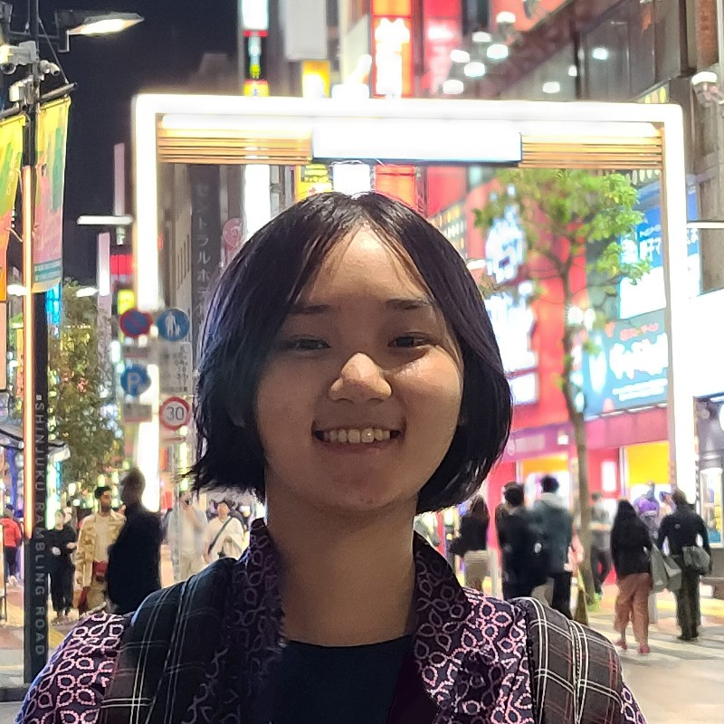

Photo taken in Shinjuku, Tokyo.Michelle Ding's Homepage
I am a CS PhD student at the University of Texas at Austin where I am fortunate to be advised by Scott Aaronson. I am generously supported by a Texas Quantum Institute Fellowship for the 2026-2028 academic year.
Before that I studied Mathematics and Computer Science from 2021-2025 at the same institution under the Turing Scholars Honors Program.
Curriculum VitaeGraduate Research
Sep 2026: Ryan Anselm, MD, Dar Gilboa, Sabee Grewal. Optimal and Verifiable Quantum Advantages in Communication Complexity
arXiv:2610.05585Sep 2026: Ryan Anselm, MD, Dar Gilboa, Sabee Grewal. Optimal and Verifiable Quantum Advantages in Communication Complexity
arXiv:2610.05585Undergraduate Research
 Batman-like quantum optics calibration attempt
Batman-like quantum optics calibration attemptApril 2025: Undergraduate Honors Thesis: Peaked Boson Sampling: towards efficiently verifiable and NISQ-able quantum advantage
Thesis Poster Slides Code(Best poster award)
Jun 2024: George Tsoukalas, Jasper Lee, John Jennings, Jimmy Xin, MD, Michael Jennings, Amitayush Thakur, Swarat Chaudhuri. PutnamBench: Evaluating Neural Theorem-Provers on the Putnam Mathematical Competition
NeurIPS 2024 Code ICML 2024(Best paper award)
Projects
Apr 2024: Formal Verification of QEC
Manuscript CodeDec 2023: IFML Retrieval Augmented Generation Models
ManuscriptJun 2022: Quantum State Tomography Experiments on PBS
Poster
 CHSH simulation results for 3 bases
CHSH simulation results for 3 basesLast update: Oct 2026
Website adapted fromPatrick Rall
Website adapted fromPatrick Rall